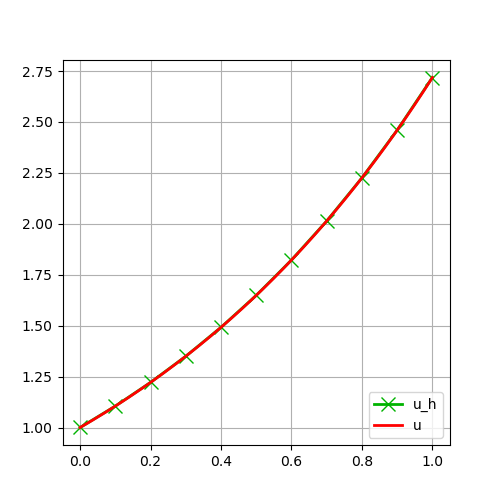

102 : Robin-Boundary Conditions 1D
This demonstrates the assignment of a mixed Robin boundary condition for a nonlinear 1D convection-diffusion-reaction PDE on the unit interval, i.e.
\[\begin{aligned} -\partial^2 u / \partial x^2 + u \partial u / \partial x + u & = f && \text{in } \Omega\\ u + \partial u / \partial_x & = g && \text{at } \Gamma_1 = \{ 0 \}\\ u & = u_D && \text{at } \Gamma_2 = \{ 1 \} \end{aligned}\]
tested with data $f(x) = e^{2x}$, $g = 2$ and $u_D = e$ such that $u(x) = e^x$ is the exact solution.
module Example102_RobinBoundaryCondition1D
using GradientRobustMultiPhysics
using ExtendableGrids
using GridVisualize
# data and exact solution
const f = DataFunction((result,x) -> (result[1] = exp(2*x[1]);), [1,1]; name = "f", dependencies = "X", bonus_quadorder = 4)
const u = DataFunction((result,x) -> (result[1] = exp(x[1]);), [1,1]; name = "u", dependencies = "X", bonus_quadorder = 4)
const g = DataFunction([2]; name = "g")
const uD = DataFunction([exp(1)]; name = "u_D")
# kernel for the (nonlinear) reaction-convection-diffusion oeprator
function operator_kernel!(result, input)
# input = [u,∇u] as a vector of length 2
result[1] = input[1] * input[2] + input[1] # convection + reaction (will be multiplied with v)
result[2] = input[2] # diffusion (will be multiplied with ∇v)
return nothing
end
# kernel for Robin boundary condition
function robin_kernel!(result, input)
# input = [u]
eval_data!(g)
result[1] = g.val[1] - input[1] # = g - u (will be multiplied with v)
return nothing
end
# everything is wrapped in a main function
function main(; Plotter = nothing, verbosity = 0, h = 1e-1, h_fine = 1e-3)
# set log level
set_verbosity(verbosity)
# generate coarse and fine mesh
xgrid = simplexgrid(0:h:1)
# setup a problem description with one unknown
Problem = PDEDescription("reaction-convection-diffusion problem")
add_unknown!(Problem; unknown_name = "u", equation_name = "reaction-convection-diffusion equation")
# add nonlinear operator
add_operator!(Problem, [1,1], NonlinearForm(OperatorPair{Identity, Gradient}, [OperatorPair{Identity, Gradient}], [1], operator_kernel!, [2,2]; name = "∇u ⋅ ∇v + (u ∇u + u) ⋅ v", bonus_quadorder = 4, newton = true) )
# right-hand side data
add_rhsdata!(Problem, 1, LinearForm(Identity, f))
# Robin boundary data right
add_operator!(Problem, [1,1], BilinearForm([Identity, Identity], Action(robin_kernel!, [1,1]); name = "(g - u) ⋅ v", AT = ON_BFACES, regions = [1]) )
# Dirichlet boundary data left
add_boundarydata!(Problem, 1, [2], InterpolateDirichletBoundary; data = uD)
# choose some finite element type and generate a FESpace for the grid
# (here it is a one-dimensional H1-conforming P2 element H1P2{1,1})
FEType = H1P2{1,1}
FES = FESpace{FEType}(xgrid)
# generate a solution vector and solve
Solution = FEVector("u_h",FES)
solve!(Solution, Problem; show_statistics = true)
# compute L2 error
L2error = L2ErrorIntegrator(u)
println("L2error = $(sqrt(evaluate(L2error,Solution[1])))")
# plot discrete and exact solution (on finer grid)
p=GridVisualizer(Plotter = Plotter, layout = (1,1))
scalarplot!(p[1,1], xgrid, nodevalues_view(Solution[1])[1], color=(0,0.7,0), label = "u_h", markershape = :x, markersize = 10, markevery = 1)
xgrid_fine = simplexgrid(0:h_fine:1)
scalarplot!(p[1,1], xgrid_fine, view(nodevalues(xgrid_fine,u),1,:), clear = false, color = (1,0,0), label = "u", legend = :rb, markershape = :none)
end
endThis page was generated using Literate.jl.
Default output:
julia> Example102_RobinBoundaryCondition1D.main()
Explored path: SparsityDetection.Path(Bool[], 1)
ITERATION | LSRESIDUAL | NLRESIDUAL | TIME ASSEMBLY/SOLVE/TOTAL (s)
-----------------------------------------------------------------------
init | | 1.35e+01/5.90e-06/1.36e+01
1 | 7.420453e-14 | 6.400322e-01 | 1.52e+00/1.19e-04/1.92e+00
2 | 4.529748e-14 | 5.344356e-02 | 4.03e-04/9.08e-05/5.59e-04
3 | 5.506533e-14 | 4.413179e-05 | 1.94e-04/4.40e-05/2.57e-04
4 | 4.017811e-14 | 4.725667e-11 | 1.68e-04/3.42e-05/2.12e-04
total | | 1.51e+01/2.94e-04/1.55e+01
L2error = 1.0271403975283884e-5